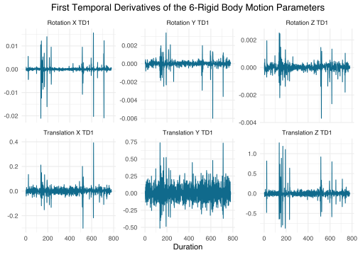
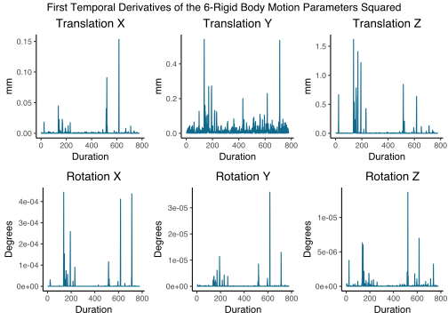

These motion variables can be used as control variables (covariates of no interest; as seen in resting-state and task-based functional connectivity analyses).
R Libraries
# data loading, manipulation, and writing
library(tidyverse)
The next six motion parameters are the first temporal derivatives of the original six rigid body motion parameters. Specifically, it is the motion minus the motion from the previous time point.
\(translation_{X_{T-1}}\), first temporal derivative of the translation in the x-direction
\(translation_{Y_{T-1}}\), first temporal derivative of the translation in the y-direction
\(translation_{Z_{T-1}}\), first temporal derivative of the translation in the z-direction
\(rotation_{X_{T-1}}\) first temporal derivative of the rotation around the x-axis
\(rotation_{Y_{T-1}}\), first temporal derivative of the rotation around the y-axis
\(rotation_{Z_{T-1}}\), first temporal derivative of the rotation around the z-axis
# calculate first temporal derivative
motion_demeaned_td1 <- motion_demeaned %>%
sapply(., FUN = function(x) c(NA, diff(x))) %>%
as_tibble() %>%
mutate(Duration = c(1:nrow(.)))
# rename columns
colnames(motion_demeaned_td1) <- c(paste0(motion_variables, "_TD1"), "Duration")
# graph motion parameters
graph_motion(motion_demeaned_td1, "First Temporal Derivatives of the 6-Rigid Body Motion Parameters")

18-Motion Regressors
The next six motion parameters are the original six rigid body motion parameters squared:
\(translation_X^2\), translation in the x-direction squared
\(translation_Y^2\), translation in the y-direction squared
\(translation_Z^2\), translation in the z-direction squared
\(rotation_X^2\), rotation around the x-axis squared
\(rotation_Y^2\), rotation around the y-axis squared
\(rotation_Z^2\), rotation around the z-axis squared
The next six motion parameters are the first temporal derivatives squared.
\(translation_{X_{T-1}}^2\), first temporal derivative of the translation in the x-direction squared
\(translation_{Y_{T-1}}^2\), first temporal derivative of the translation in the y-direction squared
\(translation_{Z_{T-1}}^2\), first temporal derivative of the translation in the z-direction squared
\(rotation_{X_{T-1}}^2\), first temporal derivative of the rotation around the x-axis squared
\(rotation_{Y_{T-1}}^2\) first temporal derivative of the rotation around the y-axis squared
\(rotation_{Z_{T-1}}^2\), first temporal derivative of the rotation around the z-axis squared
# square the first temporal derivative
motion_demeaned_td1_sq <- motion_demeaned_td1^2 %>%
as_tibble() %>%
mutate(Duration = 1:nrow(.))
# rename columns
colnames(motion_demeaned_td1_sq) <- c(paste0(motion_variables, "_TD1_Squared"), "Duration")
# plot motion.td1.sq into one figure
graph_motion(motion_demeaned_td1_sq, "First Temporal Derivatives of the 6-Rigid Body Motion Parameters Squared")

R Code Example
# function to create 24 motion variables =======================================
create_24_motion_variables <- function(dataset) {
# mean-center (demean) ----
# subtract each score from its respective column mean
dataset_motion_demeaned <- scale(x = dataset, center = T, scale = F)
# first temporal derivatives ----
# subtract motion from prior motion time point
dataset_motion_td1 <- sapply(dataset_motion_demeaned, FUN = function(x) c(NA, diff(x)))
# combine the variables into one dataset
dataset_motion <- data.frame(dataset_motion_demeaned, dataset_motion_td1)
# squares ----
# square 6-rigid body motion parameters and its temporal derivatives
dataset_motion_squared <- dataset_motion^2
# combine the variables into one dataset
dataset_motion <- data.frame(dataset_motion, dataset_motion_squared)
return(dataset_motion)
}
# load 6-rigid body motion parameters file =====================================
# assign to dataset_motion
dataset_motion <- read_csv(file.choose())
# create 24 motion variables using function ====================================
# assign output to dataset_motion_24
dataset_motion_24 <- create_24_motion_variables(dataset = dataset_motion)
# rename columns ===============================================================
# assign original motion variables
motion_variables <- c(
"translation_x", "translation_y", "translation_z",
"rotation_x", "rotation_y", "rotation_z"
)
# rename columns
colnames(dataset_motion_24) <- c(
motion_variables,
paste0(motion_variables, "_td1"),
paste0(motion_variables, "_squared"),
paste0(motion_variables, "_td1_squared")
)
# export 24-motion variables ===================================================
write_csv(x = dataset_motion_24, file = "dataset-motion-24.csv")
References
Friston, K. J., Williams, S., Howard, R., Frackowiak, R. S. J., & Turner, R. (1996). Movement-related effects in fMRI time-series. Magnetic Resonance in Medicine, 35(3), 346–355. http://doi.org/10.1002/mrm.1910350312
Yan, C.-G., Cheung, B., Kelly, C., Colcombe, S., Craddock, R. C., Di Martino, A., … Milham, M. P. (2013). A comprehensive assessment of regional variation in the impact of head micromovements on functional connectomics. NeuroImage, 76, 183–201. http://doi.org/10.1016/j.neuroimage.2013.03.004